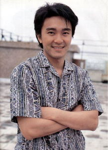
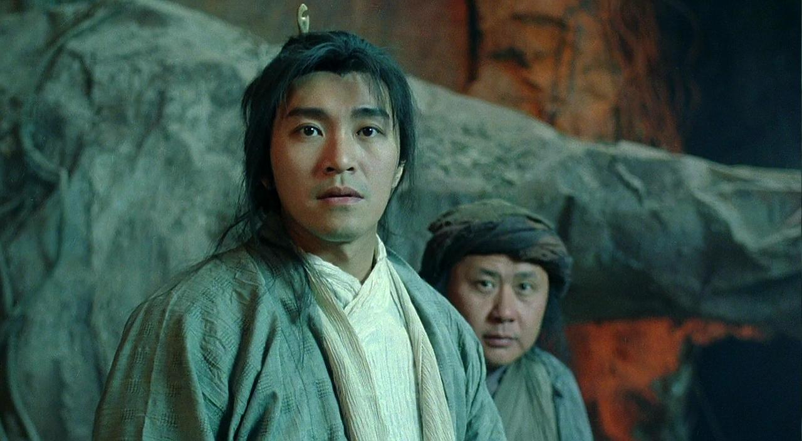
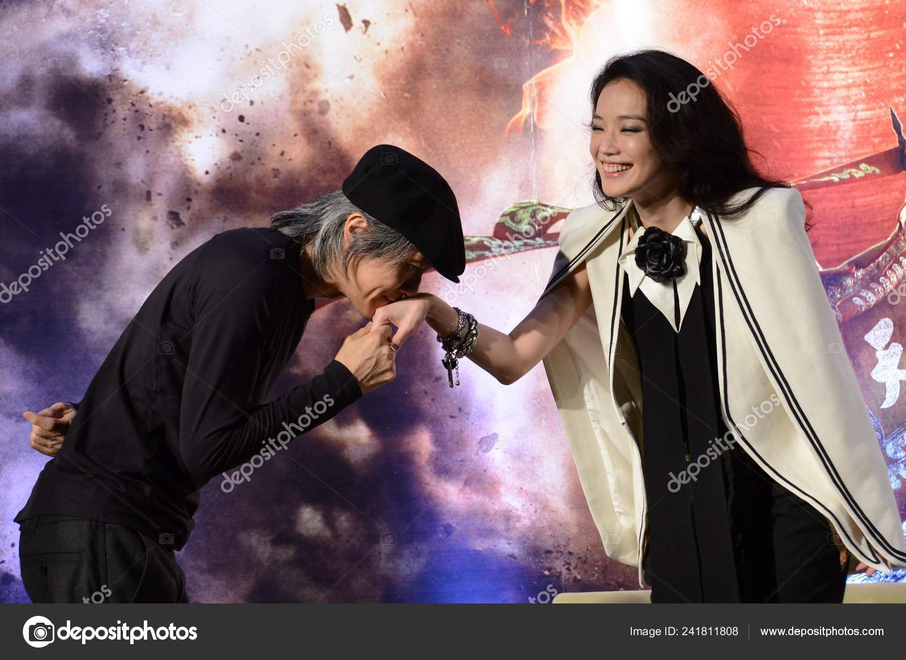

周星驰
周星驰（英语：Stephen China Sing Chi，1962年6月22日－），昵称星爷、星仔，香港著名演员、导演、监制、编剧。
重要事件
- 2005年曾与宁波旅游局合办一次声势浩大的祭祖之旅。
- 2004年推出《功夫》，香港票房收入61,278,697港元，打破《少林足球》所创下的香港华语片票房纪录
- 2008年周星驰再次身兼监制、导演、编剧、以及主演的《长江7号》，香港票房51,402,777港元，位列香
港华语片票房第7名，也是他自己的影片中票房第3高（仅次于《功夫》和《少林足球》）；《长江7号》
不但在中国大陆的票房达2.03亿人民币，而且打破了马来西亚影史票房记录。
- 2016年3月，周星驰监制、编剧及导演的电影《美人鱼》以全球5.55亿美元票房成为世界史上最高票房的非好莱坞电影。
成就和荣誉
- 1992年，美国最权威的文化杂志《人物》评选周星驰为全球最有趣男明星第一位；首位华人获此殊荣。
- 2000年，威尼斯国际影展举办“周星驰周”，集中放映周星驰的作品；于国际影展举办个人电影周，首位华人获此殊荣。
主要作品
| 年份 | 作品 |
|---|
>
| 1988 | >霹雳先锋 |
| 1989 | >义胆群英 |
| 1990 | >望夫成龙 |
| 2004 | > 功夫 |
| 2016 | > 美人鱼 |
生活照



生平
很搞笑的风格，很厉害的演技。